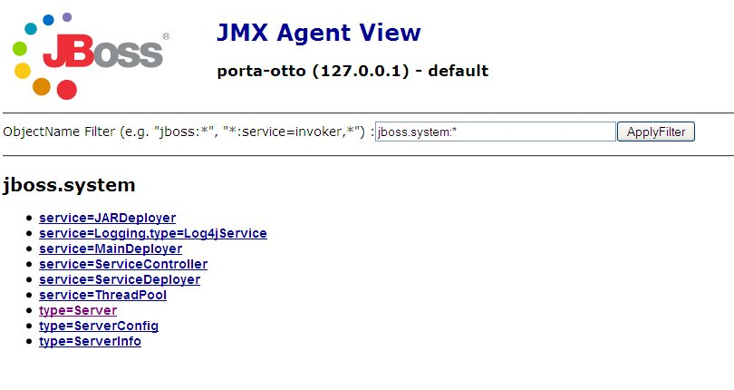
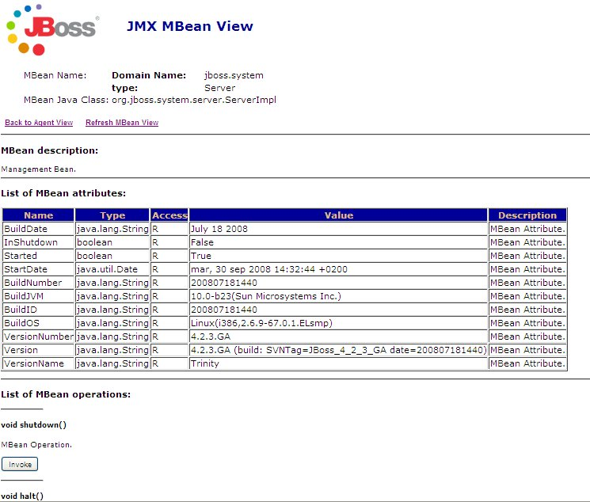

Introducción a JBoss. Servicios en JavaEE: fuentes de datos
Introducción a JBoss
Instalación y arranque
La instalación y ejecución con la configuración por defecto de JBoss es bastante sencilla. Basta con
- Descomprimir la distribución de JBoss en alguna carpeta del sistema. En estos momentos la versión actual es la 4.2, con la 5 en proceso de candidate release.
- Definir la variable de entorno JBOSS_HOME para que apunte al directorio de instalación de JBoss
- Ejecutar el script de arranque, llamado run (.bat o .sh, dependiendo del S.O) y contenido en el subdirectorio bin de JBoss.
- En la consola aparecerán mensajes a medida que van arrancando todos los servicios. Una vez completado el arranque, se mostrará el mensaje "Started in ..." con el tiempo que ha tardado JBoss en arrancar.
- Para comprobar que todo es correcto, se puede abrir la consola de administración. En un navegador, abrir la URL http://localhost:8080. Debe aparecer una página web con el logo de JBoss y acceso a las diferentes consolas de administración y monitorización.
La consola JMX
JBoss 4 implementa el estándar JMX para administración y monitorización de servicios JavaEE. Este estándar permite interactuar con los servicios a través de componentes llamados MBeans.
Podemos acceder a la consola JMX en JBoss a través del enlace JMX Console. Aparecerá una lista con todos los MBeans disponibles, ordenados por categorías (dominios, en terminología JMX). Podemos elegir por ejemplo el dominio jboss.system, que contiene información sobre el servidor propiamente dicho: en el cuadro de texto, teclear jboss.system: para filtrar los MBeans de este dominio.

Podemos seleccionar por ejemplo el MBean type=Server, que representa al propio servidor. Como podrá verse, cada componente tiene una serie de propiedades, que podemos examinar, y operaciones, que podemos invocar desde la consola JMX. Por ejemplo, pulsando sobre el "Invoke" de la operación shutdown() podemos parar el servidor.

Parar el servidor desde línea de comandos
En desarrollo, es habitual tener disponible la consola desde donde hemos arrancado JBoss. En ese caso, para parar el servidor basta con pulsar Ctrl-C. Si estamos ejecutando JBoss como un servicio del sistema, o en un sistema remoto, podemos pararlo con el script stop (.bat o .sh) del directorio bin.
Configuración de JBoss
Estructura física: directorios
JBoss viene originalmente con tres configuraciones alternativas, que se diferencian en los servicios que se ponen en marcha cuando se arranca el servidor: minimal, con el mínimo de servicios para que JBoss funcione, default, la configuración usada por defecto, con los servicios JavaEE más típicos, y all, que pone en marcha todos los servicios incluidos en la distribución.
Para poner en marcha una configuración determinada basta con pasar su nombre en el parámetro -c del script de arranque. Por ejemplo (en windows)
run.bat -c minimal
Las 3 configuraciones iniciales se corresponden con los tres subdirectorios existentes dentro del directorio server. Podríamos crear una configuración propia copiando la estructura de directorios de una de las ya existentes y adaptando los archivos de configuración a nuestras necesidades, añadiendo o quitando servicios o cambiando su configuración.
- conf: contiene un fichero de configuración XML donde se definen los servicios "fijos" durante todo el ciclo de vida del servidor. Además de estos podemos añadir servicios sobre la marcha, como ya veremos.
- data: disponible para servicios que quieran almacenar datos de manera permanente. JBoss lo utiliza para la base de datos que lleva integrada (hypersonic).
- deploy: aquí es donde se despliegan las aplicaciones y los nuevos servicios.
- lib: librerías comunes al servidor y a las aplicaciones. Por ejemplo, drivers JDBC.
- log: evidentemente, guarda los logs. JBoss usa log4j, que se configura en un XML guardado en conf.
- tmp y work: son directorios de trabajo de JBoss, similares a los del mismo nombre de Tomcat
Cambiar la configuración
Configurar JBoss hasta el último detalle es una cuestión compleja, de modo que aquí simplemente daremos unas breves indicaciones. Se recomienda consultar la excelente documentación de referencia disponible en el sitio de JBoss.
Los servicios que se definen en la configuración como fijos durante toda la "vida" del servidor se especifican en el archivo conf/jboss-service.xml. Si editamos este archivo veremos que en él se define un conjunto de MBeans. El archivo está extensamente comentado, lo que unido a la documentación de referencia hace relativamente sencillo (aunque tedioso) cambiar la configuración manualmente. Por ejemplo, el siguiente MBean (tomado de la configuración minimal) define el servicio de gestión de logs.
<mbean code="org.jboss.logging.Log4jService"
name="jboss.system:type=Log4jService,service=Logging">
<attribute name="ConfigurationURL">resource:jboss-log4j.xml</attribute>
</mbean>
Bastaría comentar la sección anterior para que no se pusiera en marcha el logging al arrancar JBoss, o cambiar el valor del atributo ConfigurationURL para usar otro fichero de configuración para log4j.
La configuración también se puede cambiar a través de la consola JMX, pero los cambios no son permanentes y solamente se mantendrán mientras el servidor esté en marcha.
Finalmente, nótese que JBoss usa internamente Tomcat como servidor web, por lo que podemos aplicar todo lo visto en la configuración de Tomcat a la parte web de JBoss. Tomcat está configurado como un servicio más de JBoss, dentro del directorio deploy/jboss-web.deployer. Allí podemos encontrar por ejemplo el server.xml de Tomcat.
Despliegue
Despliegue de aplicaciones
JBoss tiene un directorio en el que basta "dejar caer" las aplicaciones web para que se desplieguen en el servidor. Se trata del directorio deploy. En él podemos dejar un .war o bien un directorio con la aplicación web descomprimida. Recordemos que en Tomcat el directorio equivalente era webapps.
Para eliminar una aplicación basta con borrarla del directorio deploy.
Con Eclipse, la forma de trabajo será idéntica a la que empleábamos con Tomcat, únicamente necesitaremos definir el servidor JBoss y lo usaremos como runtime para nuestro proyecto web dinámico.
Despliegue de servicios
Una característica muy interesante de JBoss es la posibilidad de desplegar y eliminar servicios "en caliente", con el servidor en marcha. Estos servicios se despliegan en el mismo directorio que las aplicaciones, es decir, en deploy.
Los servicios se despliegan colocando un XML con su configuración en dicho directorio. Aquellos que requieran algún recurso adicional (librerías, otros archivos) se empaquetan en lo que JBoss llama ficheros SAR (Service Application Archive) que no son más que JARs con metainformación especial.
Al igual que con las aplicaciones, para eliminar un servicio basta con borrarlo del directorio deploy. Por ejemplo, JBoss ofrece un servicio de scheduling que podemos usar para ejecutar una tarea a intervalos regulares. Si no necesitamos dicho servicio, podemos eliminarlo "en caliente" sin más que borrar el fichero scheduler-service.xml.
Servicios en JavaEE
Un servidor de aplicaciones, además de permitirnos ejecutar nuestras aplicaciones web, ofrece una serie de servicios que pueden usar dichas aplicaciones, como conexión con bases de datos, localización de recursos externos, ejecución de componentes distribuidos, etc. El estándar JavaEE especifica los servicios que debe incorporar un servidor de aplicaciones para poder ser considerado "compatible JavaEE". JBoss es uno de tales servidores, pero Tomcat no puede ser considerado completamente como tal, ya que le faltan algunos servicios exigidos por el estándar.
Fuentes de datos y JNDI
Las aplicaciones web que acceden a una base de datos son muy frecuentes. Si la aplicación es para uso particular, o para un uso muy reducido y poco concurrente, podemos configurar un acceso por JDBC simple desde las diferentes páginas y clases que la componen.
Sin embargo, la situación cambia cuando se hace un acceso concurrente. Abrir una conexión JDBC con la base de datos es un proceso costoso en tiempo. Si cada operación requiere una nueva conexión, este tiempo se multiplicará peligrosamente. Es más eficiente mantener lo que se denomina un pool de conexiones, una serie de conexiones que se abren al arranque del servidor y se mantienen abiertas. Cuando un cliente realiza alguna operación con la BD se usa una conexión ya abierta, y cuando esta acaba, se devuelve al pool, pero en realidad no se cierra. De esta forma el proceso es mucho más eficiente.
Todos los servidores JavaEE ofrecen pools de conexiones a través de la clase DataSource, que además puede ofrecer transaccionalidad y otros aspectos. El acceso al DataSource o fuente de datos se hace a través de un "nombre simbólico" para evitar dependencias del nombre físico de la base de datos. Para esto, el servidor hace uso de un estándar JavaEE denominado JNDI. Este estándar permite localizar recursos físicos a partir de un nombre lógico. Aquí lo usaremos para fuentes de datos pero en principio puede usarse para acceder a cualquier recurso: componentes distribuidos, servicios de mail, etc.
Para configurar una fuente de datos necesitaremos realizar los siguientes pasos, aunque el procedimiento concreto dependerá del servidor:
- Dejar el driver de la base de datos accesible al servidor de aplicaciones, ya que es el que va a abrir y cerrar físicamente las conexiones, no nuestra aplicación. Este driver normalmente lo va a proporcionar el propio distribuidor de la base de datos. En nuestro caso, como usaremos MySQL, el driver está accesible desde su web, con el nombre de conector java.
- Configurar las propiedades del DataSource, indicando el nombre lógico (JNDI), nombre físico de la BD, número de conexiones máximas simultáneas, etc. Generalmente el proceso se realiza en un fichero de configuración XML o a través de alguna consola de administración.
- Ya podemos acceder al DataSource en nuestro código Java y realizar operaciones con la BD.
Vamos a ver cómo se realiza este proceso en JBoss y en Tomcat.
Fuentes de datos en JBoss
Lo primero es dejar el driver java de la base de datos a disposición de JBoss. Ya hemos visto que las librerías que deben estar accesibles durante todo el ciclo de vida se colocan en el directorio lib de JBoss. El driver no es más que un JAR con las clases que lo implementan.
Una vez colocado el driver en lib, tenemos que rearrancar el servidor. Podemos comprobar que se ha cargado correctamente a través de la consola JMX. En la parte superior de la pantalla aparecerá el dominio JMImplementation, que contiene 3 MBeans. Nos interesa el primero de ellos (LoaderRepository). En él podemos ver una lista de los JAR cargados por JBoss entre los que debería aparecer el de MySQL (mysql-connector-java...). También podemos invocar la operación displayClassInfo() introduciendo el nombre de la clase que implementa el driver (com.mysql.jdbc.Driver), que mostrará si la clase está accesible o no.
Nos queda configurar las propiedades del DataSource. En JBoss un DataSource se considera un servicio desplegable "en caliente" y por tanto se configura a través de un fichero XML que se deja en el directorio deploy. La distribución de JBoss incluye en el directorio docs/examples/jca ficheros de configuración de ejemplo para distintas bases de datos. Nosotros tomaremos el de MySQL: mysql-ds.xml. Nótese que todos estos ficheros siguen la convención de que su nombre acaba por -ds. El servidor busca los nuevos DataSources en los ficheros XML que sigan esta convención.
Aquí tenemos un ejemplo de una posible configuración para MySQL:
<?xml version="1.0" encoding="UTF-8"?>
<datasources>
<local-tx-datasource>
<jndi-name>PruebaDS</jndi-name>
<connection-url>jdbc:mysql://localhost:3306/prueba</connection-url>
<driver-class>com.mysql.jdbc.Driver</driver-class>
<user-name>prueba</user-name>
<password>prueba</password>
<exception-sorter-class-name>
org.jboss.resource.adapter.jdbc.
vendor.MySQLExceptionSorter
</exception-sorter-class-name>
</local-tx-datasource>
</datasources>
Aunque el fichero de ejemplo original contiene más información, se ha eliminado la que no es estrictamente necesaria. Veamos los elementos definidos:
- <local-tx-datasource>: define una fuente de datos con transaccionalidad local (), es decir, que no va a haber transaccionalidad distribuida, que implique a varias bases de datos.
- <jndi-name>: es el nombre JNDI, es decir, el nombre lógico que usaremos en nuestro código Java.
- <connection-url>: la URL de conexión con la BD, al igual que cuando abrimos la conexión manualmente.
- <driver-class>: clase que implementa el driver.
- <user-name> y <password>: datos del usuario de la BD.
Al dejar el fichero en deploy aparecerá en la terminal donde está arrancado el servidor un mensaje indicando la incorporación de una nueva fuente de datos, algo como:
Bound ConnectionManager 'jboss.jca:service=DataSourceBinding,name=PruebaDS' to JNDI name 'java:PruebaDS'
Nótese que el nombre JNDI en realidad es java:PruebaDS, como vemos también en el código java de ejemplo para acceder a la fuente de datos:
//Obtener el contexto JNDI
Context initCtx = new InitialContext();
//Obtener el recurso con su nombre lógico (JNDI)
DataSource ds = (DataSource) initCtx.lookup("java:PruebaDS");
//A través del DataSource podemos obtener una conexión con la BD
Connection conn = ds.getConnection();
//A partir de aquí trabajaríamos como es habitual en JDBC
...
Aunque una descripción más detallada del funcionamiento de JNDI está fuera del alcance de este tema, para nuestros propósitos basta saber que el servidor de aplicaciones mantiene un servidor JNDI. El acceso inicial al servidor JNDI se hace a través del InitialContext. Una vez obtenido el contexto, podemos obtener recursos (lookup) por su nombre lógico.
Fuentes de datos en Tomcat
Los pasos a realizar para configurar la fuente de datos en Tomcat son similares a los que hemos seguido con JBoss.
Primero,el driver java se coloca en el directorio lib de Tomcat (el mismo nombre que tenía en JBoss). Tenemos que rearrancar el servidor para que se cargue la librería.
Ahora hay que configurar las propiedades de la fuente de datos. Esto se hace dentro de los ficheros de configuración de Tomcat, en el elemento <Context>. Ya hemos visto que básicamente hay dos sitios donde se pueden configurar las aplicaciones: de manera centralizada, en el server.xml o bien en un XML propio de la aplicación (context.xml). Veremos la segunda forma, aunque todo esto es aplicable también a una configuración centralizada.
Deberemos crear en una carpeta META-INF dentro de nuestra aplicación web, un fichero llamado context.xml, con el siguiente contenido:
<?xml version="1.0" encoding="ISO-8859-1"?>
<Context>
<Resource
name="PruebaDS"
type="javax.sql.DataSource"
auth="Container"
username="prueba"
password="prueba"
driverClassName="com.mysql.jdbc.Driver"
url="jdbc:mysql://localhost:3306/prueba"
maxActive="20"
maxIdle="5"
maxWait="10000"/>
</Context>
Se ha establecido así un pool de conexiones a una base de datos MySQL. Partiendo de esta premisa, los elementos en negrita son modificables:
- name: El atributo name de la etiqueta Resource indica el nombre que le queremos dar al pool de conexiones. Es arbitrario, y totalmente a nuestra elección
- username y password: Estos atributos de Resource indican el usuario y password para acceso a la base de datos MySQL
- url: El atributo url de la etiqueta Resource especifica la URL de conexión a la base de datos. En general, la URL será casi igual que la del ejemplo, cambiando únicamente el nombre de la base de datos (bdprueba) por el que nos interese
-
Hay una serie de parámetros adicionales de configuración para especificar características del pooling:
- maxActive: máximo número de conexiones a la BD que se mantendrán activas
- maxIdle: máximo número de conexiones libres que habrá en el pool (poner 0 para no tener límite). Este parámetro permitirá limitar el máximo de conexiones activas en cada momento. Por ejemplo, si maxActive está puesto a 100, pero sólo tenemos 20 conexiones activas, y permitimos 5 desocupadas, en total habrá 25 conexiones en el pool en ese momento (luego se crearán más si son necesarias)
- maxWait: tiempo en milisegundos que se deberá esperar como máximo para recibir una conexión libre (10 segundos, en el ejemplo)
El código Java para acceder a la fuente de datos es prácticamente idéntico al que usábamos con JBoss, con la única diferencia del "prefijo" del nombre JNDI. En JBoss es java: mientras que en Tomcat es java:comp/env/
//Obtener el contexto JNDI
Context initCtx = new InitialContext();
//Obtener el recurso con su nombre lógico (JNDI)
DataSource ds = (DataSource) initCtx.lookup("java:comp/env/PruebaDS");
//A través del DataSource podemos obtener una conexión con la BD
Connection conn = ds.getConnection();
//A partir de aquí trabajaríamos como es habitual en JDBC
...